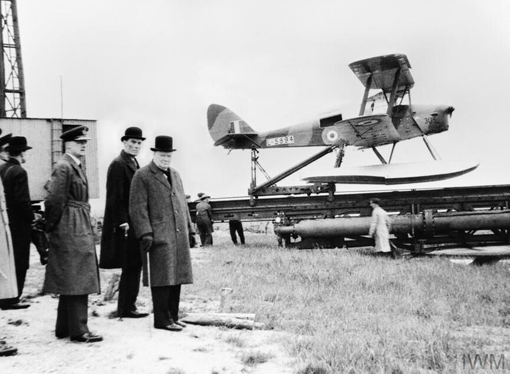

Origem
Os primeiros drones surgiram na Grã-Bretanha e Estados Unidos durante a Primeira Guerra Mundial.
Aerial Target da Grã-Bretanha, uma pequena aeronave controlada por rádio, foi testada pela primeira vez em março de 1917, enquanto o torpedo aéreo Americano conhecido como 'Kettering Bug' voou pela primeira vez em outubro de 1918. Apesar dos dois terem sido promissores em testes de voo, nenhum foi usado operacionalmente durante a guerra.
Em 1935, os britânicos produziram várias aeronaves controladas por rádio para serem usadas como alvos para fins de treinamento. Acredita-se que o termo 'drone' começou a ser usado nessa época, inspirado no nome de um desses modelos, o DH.82B Queen Bee.
O drone Queen Bee (DH.82B Queen Bee)
Em 1994, as Forças Armadas dos EUA passaram a testar os drones carregados com armas, e sua primeira utilização em combates ocorreu no Afeganistão, a partir de outubro de 2001.
Desde os ataques terroristas de 11 de setembro, os Estados Unidos, em particular, aumentaram significativamente o uso de drones.